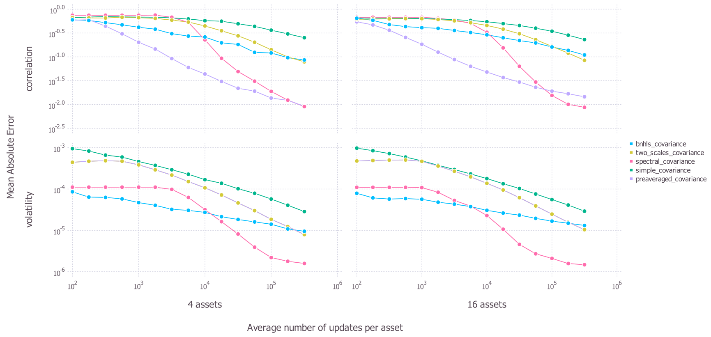

Performance Comparison
We assess the accuracy of each implemented covariance matrix by doing a general Monte Carlo procedure and comparing the estimated correlation matrices and volatilities to their true values. The details of the Monte Carlo procedure is as described in the working paper (Baumann \& Klymak 2021) We start by generating data exhibiting asynchronous price updates with microstructure noise. We do this two times, once for 4 assets and once for 16 assets. In each case and for each technique, the default estimation and regularisation settings are applied.
We measure the accuracy of each algorithm by the mean absolute difference between the corresponding elements of the estimated and the true correlation matrices and volatilities. The results are presented below where each point gives the average accuracy from the 4 asset and the 16 asset Monte Carlo samples. The top panels show accuracy in estimating correlations while the bottom panels show accuracy in estimating volatilities. In each panel, the x axis shows how many ticks of data are used and the y axis shows the average (across 100 generated paths) mean absolute error for each estimated volatility and correlation.

We can see that the simple_covariance method generally performs poorly. While it does improve with more data, it is generally always outperformed by the other methods both in volatility and correlation estimation.
Looking at the more advanced methods, we can see that the number of ticks that we have is important in choosing a method and that no method is dominant in all situations. In correlation estimation, the best performing technique is the preaveraged_covariance method for a lower number of ticks, but this is overtaken by the spectral_covariance method for a higher number of ticks.
When we consider accuracy in estimating volatilities, the most effective technique appears to be the bnhls_covariance technique for when there are few ticks; however, this is again overtaken by the spectral_covariance when there is a large amount of data. Note that the spectral_covariance case failed to generate predictions in this case for 16 dimensions when it had less than 500 observations (on average) per asset.